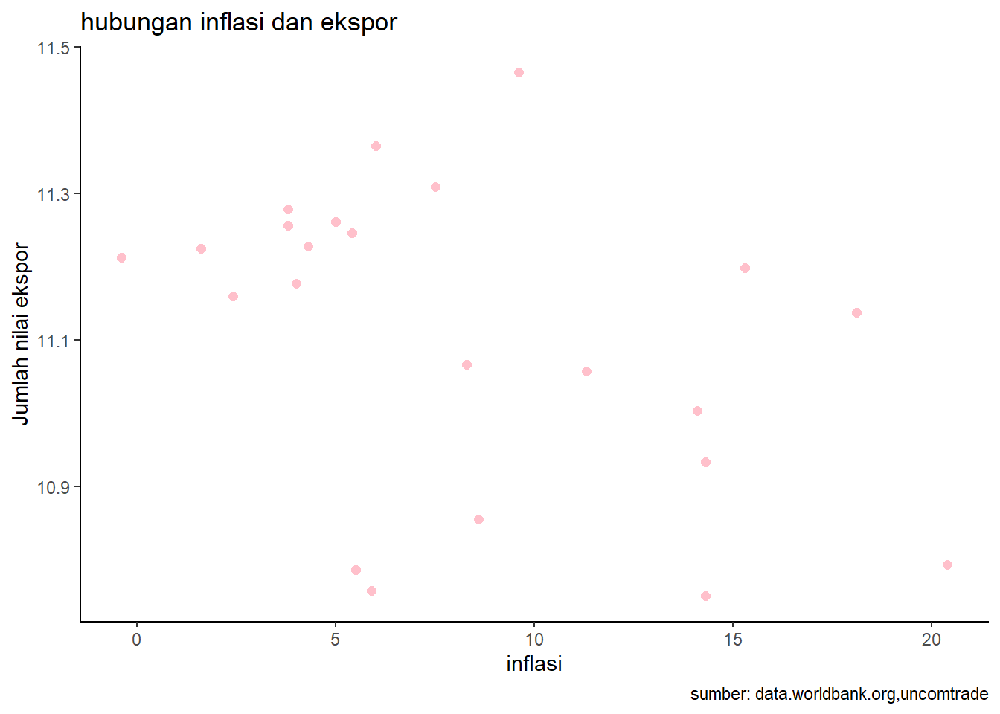

library(tidyverse)
library(readxl)
library(WDI)
library(kableExtra)
library(dplyr)
library(writexl)
library(ggplot2)Pengaruh Inflasi Terhadap Jumlah Nilai Ekspor di Indonesia Tahun 2000 Hingga 2022
Metode Penelitian Politeknik APP Jakarta

1 Pendahuluan
1.1 Latar belakang
Indonesia adalah salah satu negara berkembang yang memiliki potensi ekspor yang besar. Ekspor merupakan salah satu sumber devisa dan pendapatan nasional yang penting bagi perekonomian Indonesia. Menurut data Satu Data Perdagangan, nilai ekspor Indonesia pada tahun 2023 mencapai 1.824,9 triliun rupiah, meningkat 15,4% dibandingkan tahun 2022. Ekspor Indonesia terdiri dari berbagai komoditas, seperti minyak dan gas, pertanian, perkebunan, industri, dan pertambangan.
Namun, kinerja ekspor Indonesia juga dipengaruhi oleh berbagai faktor, baik dari dalam maupun luar negeri. Salah satu faktor yang berpengaruh adalah inflasi. Inflasi adalah kenaikan harga-harga secara umum dan terus menerus yang menyebabkan menurunnya daya beli masyarakat. Inflasi dapat mempengaruhi nilai tukar mata uang, biaya produksi, serta permintaan produk ekspor. Di sisi lain, ekspor dapat mempengaruhi perekonomian nasional dan nilai tukar mata uang.
Hubungan antara inflasi dan ekspor adalah hubungan yang kompleks dan saling mempengaruhi. Beberapa penelitian sebelumnya telah mengkaji hubungan ini dengan menggunakan berbagai metode dan variabel. Namun, hasil penelitian tersebut masih bervariasi dan belum ada kesepakatan yang pasti. Oleh karena itu, penelitian ini bertujuan untuk menganalisis pengaruh inflasi terhadap jumlah nilai ekspor di Indonesia tahun 2000-2022 dengan menggunakan data sekunder dari World Bank dan Uncomtrade. Penelitian ini diharapkan dapat memberikan kontribusi bagi pengembangan ilmu ekonomi, khususnya mengenai hubungan inflasi dan ekspor, serta memberikan masukan bagi pemerintah dalam merumuskan kebijakan ekonomi yang tepat.
1.2 Ruang lingkup
Terdapat dua variabel ( variabel X, variabel Y) yang digunakan sebagai objek penelitian ini. Peneliti pengambil data objek variabel X melalui data.worldbank.org berupa inflasi Indonesia. Sedangkan variabel Y peneliti mengambil data objek dari uncomtrade berupa jumlah ekspor Indonesia. Data bersifat time series dalam kurun waktu tahun 2000 hingga 2022.
1.3 Rumusan masalah
Apakahh inflasi mempengaruhi ekspor di Indonesia?
Bagaimana hubungan inflasi terhadap ekspor di Indonesia ?
1.4 Tujuan dan manfaat penelitian
Tujuan penelitian pengaruh inflasi terhadap ekspor di Indonesia untuk mengetahui arah dan besarnya pengaruh inflasi terhadap ekspor di Indonesia.
Manfaat dari penelitian ini dapat dibagi menjadi manfaat akademis dan manfaat praktis.
Manfaat akademis
Untuk menambah pengetahuan dan wawasan tentang pengaruh inflasi terhadap ekspor di Indonesia. Penelitian ini juga dapat digunakan sebagai referensi penelitian lain yang ingin melakukan penelitian serupa.
Manfaat praktis
Untuk memberikan informasi kepada pemerintah dan pelaku usaha tentang pengaruh inflasi terhhadap ekspor di Indonesia. Informasi ini dapat digunakan oleh pemerintah untuk Menyusun kebijakan yang tepat untuk mengendalikan inflasi dan meningkatkan ekspor.
1.5 Package
Package yang digunakan dalam penelitian ini antara lain:
2 Studi pustaka
INFLASI
Inflasi adalah kondisi di mana harga-harga kebanyakan barang dan jasa mengalami peningkatan secara terus-menerus dalam periode tertentu. Misalnya, harga beras, minyak goreng, dan bensin naik setiap bulannya. Jika hanya ada satu atau dua macam barang yang harganya naik, hal itu belum bisa dikatakan sebagai inflasi, kecuali jika kenaikan tersebut menyebar atau memicu kenaikan harga barang lainnya. Misalnya, kenaikan harga bensin dapat menyebabkan kenaikan harga transportasi, makanan, dan barang-barang lain yang membutuhkan bensin sebagai bahan bakar. Keadaan yang bertolak belakang dengan inflasi adalah deflasi. Deflasi adalah kondisi di mana harga-harga barang dan jasa mengalami penurunan secara umum dan terus menerus dalam periode tertentu. Deflasi dapat terjadi karena adanya penurunan permintaan, peningkatan produksi, atau penurunan jumlah uang beredar. Untuk menghitung dan mengumpulkan data inflasi, Badan Pusat Statistik (BPS) melakukan survei dengan mengambil sampel harga barang yang mencerminkan pola konsumsi masyarakat pada umumnya. Sampel harga barang tersebut disebut sebagai indeks harga konsumen (IHK). IHK adalah ukuran yang menggambarkan perubahan harga sekelompok barang dan jasa yang dikonsumsi oleh rumah tangga. Ada beberapa faktor yang dapat menyebabkan inflasi, antara lain adalah adanya tekanan dari penawaran (cost push inflation), adanya tekanan dari permintaan (demand pull inflation), dan adanya ekspektasi inflasi. Tekanan dari penawaran adalah faktor yang menyebabkan inflasi karena adanya kenaikan biaya produksi, misalnya karena kenaikan harga bahan baku, upah, pajak, atau subsidi. Tekanan dari permintaan adalah faktor yang menyebabkan inflasi karena adanya kenaikan permintaan barang dan jasa yang melebihi kapasitas produksi, misalnya karena adanya pertumbuhan penduduk, pendapatan, atau pengeluaran pemerintah. Ekspektasi inflasi adalah faktor yang menyebabkan inflasi karena adanya keyakinan atau prediksi bahwa harga-harga akan terus naik di masa depan, sehingga mendorong masyarakat untuk menaikkan harga, upah, atau permintaan barang dan jasa saat ini.
EKSPOR
Ekspor merupakan aktivitas pengiriman barang atau jasa dari satu negara ke negara lain dalam rangka berdagang. Ekspor umumnya dilakukan oleh perusahaan yang memiliki surplus produksi atau berkeinginan untuk memasuki pasar internasional. Ekspor juga dapat memperbesar pendapatan dan pertumbuhan ekonomi suatu negara, serta menambah lapangan kerja dan devisa Ekspor terbagi menjadi dua macam, yaitu ekspor langsung dan ekspor tidak langsung. Ekspor langsung adalah saat penjual atau eksportir menjual barang atau jasa secara langsung ke pembeli atau importir di negara lain. Ekspor tidak langsung adalah saat penjual atau eksportir menjual barang atau jasa dengan menggunakan perantara, seperti perusahaan manajemen ekspor atau perusahaan pengekspor, yang lalu menjualnya ke negara lain Untuk melakukan ekspor, ada beberapa langkah yang harus dilakukan, seperti mendaftarkan diri sebagai eksportir, mengurus izin, menyiapkan dokumen, membayar pajak, dan mengirimkan barang. Langkah ini dapat beragam tergantung pada jenis barang, negara tujuan, dan peraturan yang berlaku.
3 Metode penelitian
3.1 Data
| INFLASI(x) | LOGEKSPOR(y) | EKSPOR |
|---|---|---|
| 20,4 | 10,79 | $62.124.006.936,00 |
| 14,3 | 10,75 | $56.316.866.700,00 |
| 5,9 | 10,76 | $57.158.751.145,00 |
| 5,5 | 10,79 | $61.058.187.386,00 |
| 8,6 | 10,85 | $71.582.468.122,00 |
| 14,3 | 10,93 | $85.659.947.504,00 |
| 14,1 | 11,00 | $100.798.615.667,00 |
| 11,3 | 11,06 | $114.100.872.803,00 |
| 18,1 | 11,14 | $137.020.424.402,00 |
| 8,3 | 11,07 | $116.509.991.781,00 |
| 15,3 | 11,20 | $157.779.103.470,00 |
| 7,5 | 11,31 | $203.496.619.185,00 |
| 3,8 | 11,28 | $190.031.839.234,00 |
| 5 | 11,26 | $182.551.754.383,00 |
| 5,4 | 11,25 | $176.036.194.332,00 |
| 4 | 11,18 | $150.366.281.305,00 |
| 2,4 | 11,16 | $144.489.796.418,00 |
| 4,3 | 11,23 | $168.827.554.042,00 |
| 3,8 | 11,26 | $180.215.034.094,00 |
| 1,6 | 11,22 | $167.682.995.133,00 |
| -0,4 | 11,21 | $163.191.837.310,00 |
| 6 | 11,36 | $231.522.458.128,00 |
| 9,6 | 11,47 | $291.979.090.608,00 |
Penelitian ini menggunakan data time series pada kurun waktu 2000 hingga 2022. Pada variabel Y data berbentuk USD, yang kemudian peneliti melakukan log terhadap variabel “EKSPOR” untuk mendapatkan satuan yang sama, sehingga menghasilkan data seperti pada “LOGEKSPOR”,yang nantinya akan dijadikan objek penelitian sebagai variabel Y.
library(readxl)
datahanny<-read_excel("C:/METODOLOGI/hanny/datahanny.xlsx")
head(datahanny)# A tibble: 6 × 3
x logy y
<dbl> <dbl> <dbl>
1 20.4 10.8 62124006936
2 14.3 10.8 56316866700
3 5.9 10.8 57158751145
4 5.5 10.8 61058187386
5 8.6 10.9 71582468122
6 14.3 10.9 85659947504library("ggplot2")
library("readxl")
library("dplyr")
ggplot(data=datahanny,aes(x=x,y=logy))+
geom_point(color="pink",size=2)+
labs(title="hubungan inflasi dan ekspor",
x="inflasi",
y="Jumlah nilai ekspor",
caption = "sumber: data.worldbank.org,uncomtrade")+
theme_classic()
3.2 Metode analisis
Metode yang dipilih adalah regresi univariat dengan “logy” sebagai variabel dependen. Penelitian ini dimaksud untuk mencari hubungan antara inflasi terhadap ekspor, dengan spesifikasi yang dilakukan sebagai berikut:
\[ y_{t}=\beta_0 + \beta_1 x_t+\mu_t \] di mana \(y_t\) adalah ekspor dan \(x_t\) adalah inflasi.
4 Pembahasan
4.1 Pembahasan masalah
| variable | coefficients |
|---|---|
| Intercept | 11.237928 |
| X | -0.015623 |
| Multiple R-squared | 0.1746 |
| Adjusted R-squared | 0.1353 |
| F-statistic | 4.443 |
| p-value | 0.04723 |
Hasil regresi yang telah didapatkan dimasukkan ke dalam rumus , sehingga menjadi: \[ y_{t}=\ 11.237928 - \ 0.015623x+\mu_t \]
Dari hasil tersebut dapat dilihat bahwa inflasi berpengaruh negatif terhadap jumlah nilai ekspor di Indonesia, yang artinya apabila inflasi naik satu, maka ekspor akan mengalami penurunan sebesar 0.015623.
Pengaruh inflasi yang negarif terhadap ekspor dapat terjadi apabila inflasi terjadi di Indonesia. Hal ini dapat menyebabkan peningkatan biaya produksi barang ekspor yang disebabkan karena kenaikan harga bahan baku, tenaga kerja, dan biaya oprasional lainnya.
4.2 Analisis masalah
Hasil regresinya adalah:
setwd("C:/METODOLOGI/hanny")
datahanny <-read_excel("datahanny.xlsx")
library(readxl)
reg1<-lm(logy~x,data = datahanny)
summary(reg1)
Call:
lm(formula = logy ~ x, data = datahanny)
Residuals:
Min 1Q Median 3Q Max
-0.38867 -0.06181 0.00172 0.10092 0.37741
Coefficients:
Estimate Std. Error t value Pr(>|t|)
(Intercept) 11.237928 0.073010 153.922 <2e-16 ***
x -0.015623 0.007412 -2.108 0.0472 *
---
Signif. codes: 0 '***' 0.001 '**' 0.01 '*' 0.05 '.' 0.1 ' ' 1
Residual standard error: 0.1928 on 21 degrees of freedom
Multiple R-squared: 0.1746, Adjusted R-squared: 0.1353
F-statistic: 4.443 on 1 and 21 DF, p-value: 0.04723Nilai multiple R-squared sebesar 0.1746, dan F-statistic 4.443, nilai multiple R-squared ini menunjukkan bahwa model regresi hanya dapat menjelaskan 17.46% variasi y, sedangkan sisanya dipengaruhi oleh faktor lain.
Nilai F-statistik memiliki p-value sebesar 0.04723, yang berarti model regresi signifikan pada tingkat signifikansi 5%. Secara keseluruhan, analisis regresi menunjukkan bahwa ada hubungan negatif dan signifikan antara x dan y, tetapi model regresi memiliki kualitas yang rendah dalam menjelaskan variasi y. Maka peneliti perlu menambahkan variabel lain untuk meningkatkan kualitas model regresi.
5 Kesimpulan
Kenaikan biaya produksi dapat menyebabkan harga barang ekspor menjadi lebih mahal. Hal ini mengurangi daya saing barang ekspor dari Indonesia di pasar international. Selain itu inflasi Indonesia juga dapat menyebabkan nilai tukar melemah terhadap mata uang negara tujuan ekspor.
Inflasi berpengaruh signifikan terhadap jumlah nilai ekspor di Indonesia dalam kurun waktu periode tahun 2000 hingga 2022. Hal ini ditunjukkan dengan nilai coefficients pada x -0.015623 yang artinya setiap kenaikan satu pada inflasi dapat menurunkan jumlah nilai ekspor sebesar 0.015623. Dapat disimpulkan bahwa inflasi berpengaruh namun negatif terhadap jumlahh nilai ekspor. Namun perlu dicatat bahwa peneliti perlu menambah faktor-faktor yang dapat mempengaruhi ekspor, seperti nilai tukar dan sebagainya, untuk mendapatkan kualitas model yang lebih baik dalam menjelaskan variasi y.
6 Referensi
Elva Dona, Habibatul Hidayati, Khairil Aswan, Rusdandi Oktavian, & Irwan Muslim.(2022). Berpengaruhkah Jumlah Uang Beredar, Suku Bunga, Ekspor dan Impor terhadap Inflasi di Indonesia? Jurnal Ekobistek, 355–360. https://doi.org/10.35134/ekobistek.v11i4.411
Ginting, A. M. (2017). ANALISIS PENGARUH EKSPOR TERHADAP PERTUMBUHAN EKONOMI INDONESIA. Buletin Ilmiah Litbang Perdagangan, 11(1), 1–20. https://doi.org/10.30908/bilp.v11i1.185
Mutia, R. (t.t.). FAKULTAS EKONOMIKA DAN BISNIS UNIVERSITAS DIPONEGORO SEMARANG 2015.
Silaban, R. (2022). PENGARUH NILAI TUKAR DAN INFLASI TERHADAP EKSPOR NON MIGAS DI INDONESIA. 6(1).
Widyasanti, A. A. (2010). PERDAGANGAN BEBAS REGIONAL DAN DAYA SAING EKSPOR: KASUS INDONESIA. Buletin Ekonomi Moneter dan Perbankan, 13(1), 5–22. https://doi.org/10.21098/bemp.v13i1.251